46个WebP：三种生物、十四件布景和一个背景的运行导出；未接入游戏。本页为交付目录，不代表游戏效果验收。
接入映射 · 文件清单 · 复制路径 · 游动循环 · 待定规则
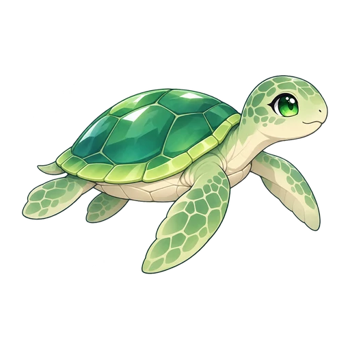
512×512 · 34 KiB
512×512 · 23 KiB
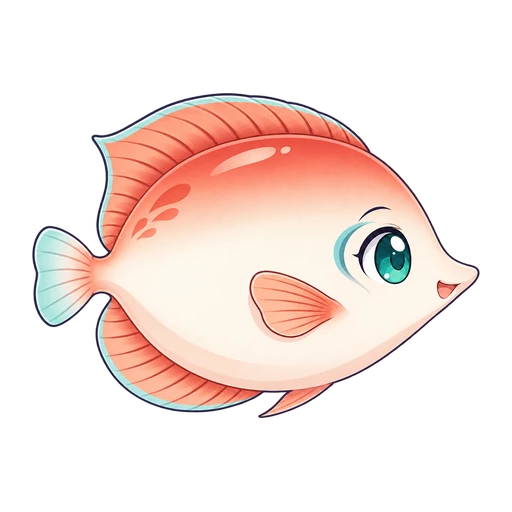
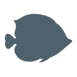
512×512 · 29 KiB
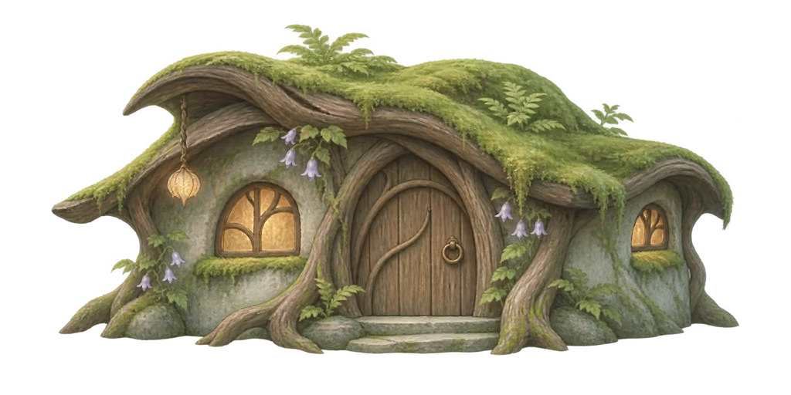
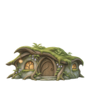
1024×512 · 123 KiB
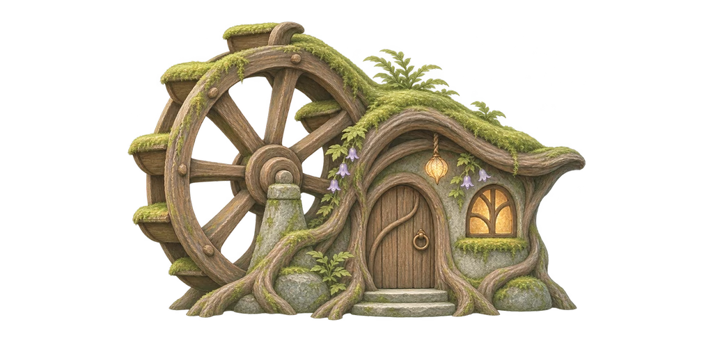
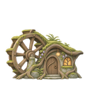
1024×512 · 116 KiB
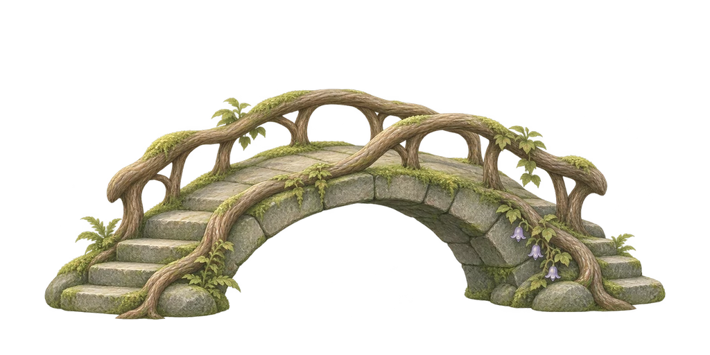
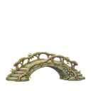
1024×512 · 111 KiB
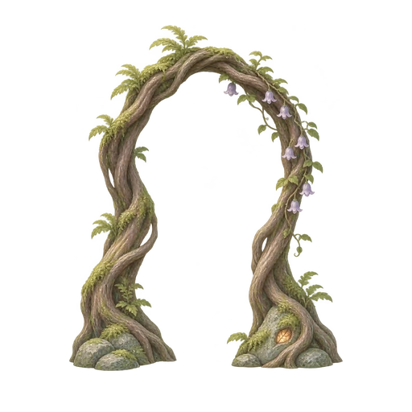
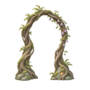
512×512 · 49 KiB
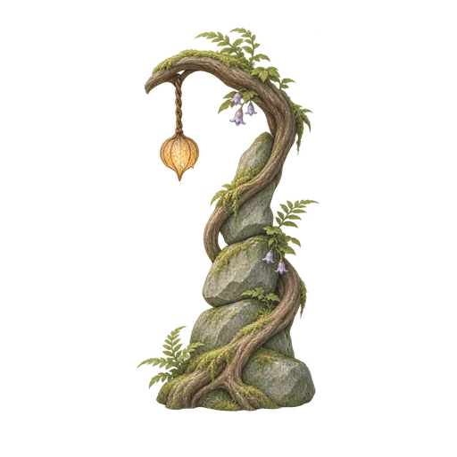
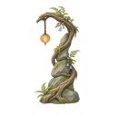
512×512 · 37 KiB
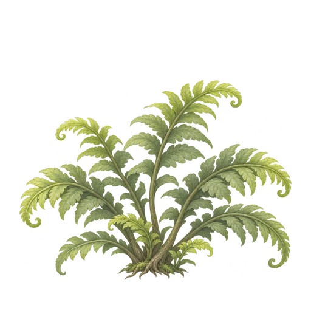
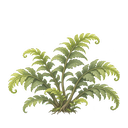
512×512 · 87 KiB
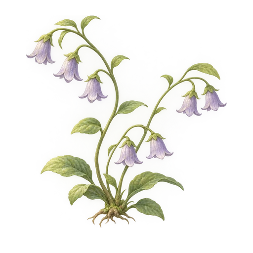
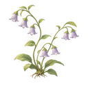
512×512 · 72 KiB
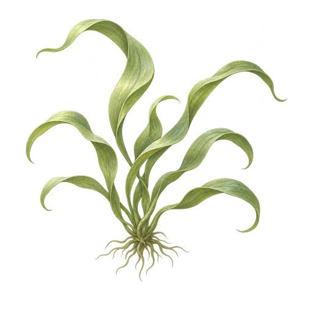
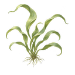
512×512 · 64 KiB
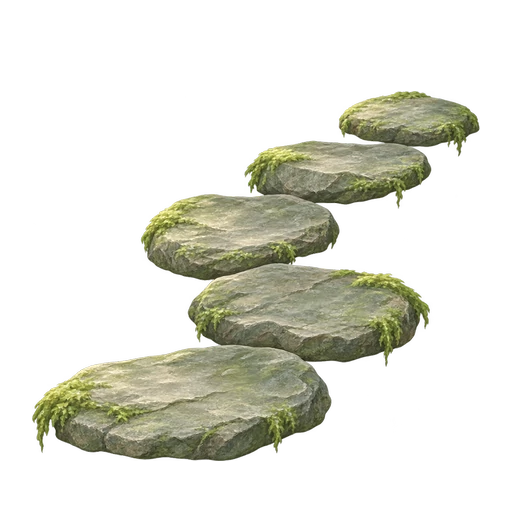
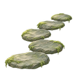
512×512 · 48 KiB
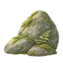
512×512 · 54 KiB
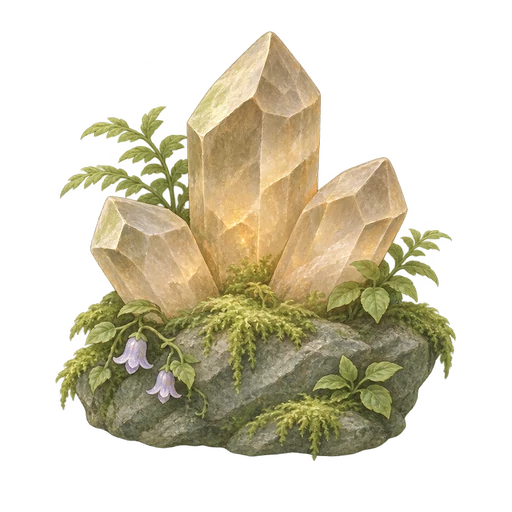
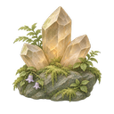
512×512 · 69 KiB
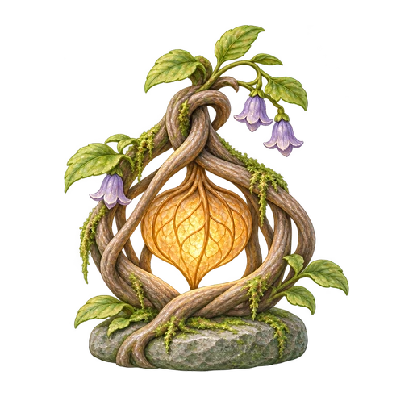
512×512 · 78 KiB
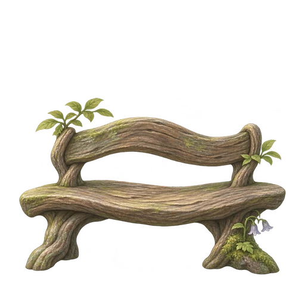
512×512 · 52 KiB
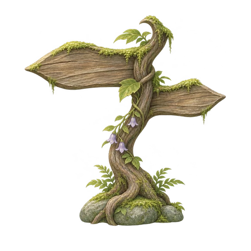
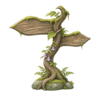
512×512 · 57 KiB
1536×960 · 154 KiB